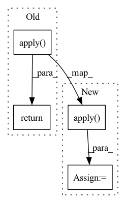

Pattern ID :731

Before Change
def forward(self, x, arg_route = (True, True), **kwargs):
f_args, g_args = map(lambda route: kwargs if route else {}, arg_route)
block_kwargs = {"f_args": f_args, "g_args": g_args}
return _ReversibleFunction.apply(x, self.blocks, block_kwargs)
After Change
f_args, g_args = map(lambda route: kwargs if route else {}, arg_route)
block_kwargs = {"f_args": f_args, "g_args": g_args}
x = torch.cat((x, x), dim = 1)
x = _ReversibleFunction.apply(x, self.blocks, block_kwargs)
return torch.stack(x.chunk(2, dim = 1)).mean(dim = 0)
In pattern: SUPERPATTERN
Frequency: 3
Non-data size: 4
Instances
Fragment ID: 2747485
Project Name: lucidrains/axial-attention
Commit Name: 81fbce2d8550c40e29379b601c88fe0576cbc0c6
Time: 2021-08-25
Author: lucidrains@gmail.com
File Name: axial_attention/reversible.py
M Class Name: ReversibleSequence
N Class Name: ReversibleSequence
M Method Name: forward(3)
N Method Name: forward(3)
M Parent Class: nn.Module
N Parent Class: nn.Module
M File Name: axial_attention/reversible.py
N File Name: axial_attention/reversible.py
M Start Line: 132
M End Line: 133
N Start Line: 132
N End Line: 135
'>
Before Change
torch.Tensor: quantized input tensor.
if self._gradient_cancellation_threshold and self._gradient_cancellation_threshold > 0:
return GradientCancellation.apply(input_tensor, self._gradient_cancellation_threshold, self._activation)
else:
return self._activation(input_tensor)
After Change
torch.Tensor: quantized input tensor.
if self._gradient_cancellation_threshold and self._gradient_cancellation_threshold > 0:
input_tensor = GradientCancellation.apply(input_tensor, self._gradient_cancellation_threshold)
return self._activation(input_tensor)
'>
Fragment ID: 2747484
Project Name: hpi-xnor/bitorch
Commit Name: 1ef49f8faadfae41d3f4c8a68eac55ddbcbcafbb
Time: 2021-10-20
Author: paul.mattes@student.hpi.de
File Name: bitorch/layers/qactivation.py
M Class Name: QActivation
N Class Name: QActivation
M Method Name: forward(2)
N Method Name: forward(2)
M Parent Class: nn.Module
N Parent Class: nn.Module
M File Name: bitorch/layers/qactivation.py
N File Name: bitorch/layers/qactivation.py
M Start Line: 86
M End Line: 88
N Start Line: 85
N End Line: 86
'>
Before Change
blocks = self.blocks[:1] if len(blocks) == 0 else blocks
block_args = list(map(lambda x: {"f_args": x[0], "g_args": x[1]}, block_args))
return _ReversibleFunction.apply(x, blocks, block_args)
After Change
layers_and_args = layer_drop(layers_and_args, self.layer_dropout)
blocks, args = map(lambda ind: list(map(itemgetter(ind), layers_and_args)), (0, 1))
out = _ReversibleFunction.apply(x, blocks, args)
return torch.stack(out.chunk(2, dim=-1)).sum(dim=0)
'>
Fragment ID: 2747487
Project Name: lucidrains/sinkhorn-transformer
Commit Name: d5b9c649e59290b15c15f85d0bb182cb20b699fb
Time: 2020-04-15
Author: lucidrains@gmail.com
File Name: sinkhorn_transformer/reversible.py
M Class Name: ReversibleSequence
N Class Name: ReversibleSequence
M Method Name: forward(2)
N Method Name: forward(2)
M Parent Class: nn.Module
N Parent Class: nn.Module
M File Name: sinkhorn_transformer/reversible.py
N File Name: sinkhorn_transformer/reversible.py
M Start Line: 133
M End Line: 142
N Start Line: 161
N End Line: 174